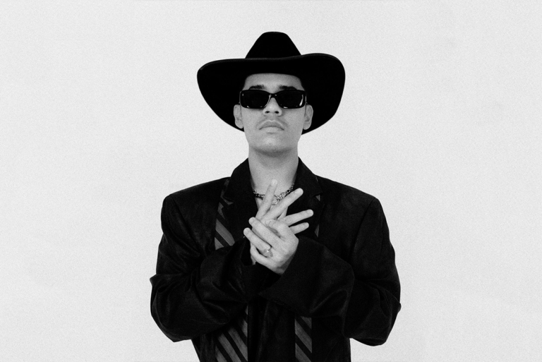
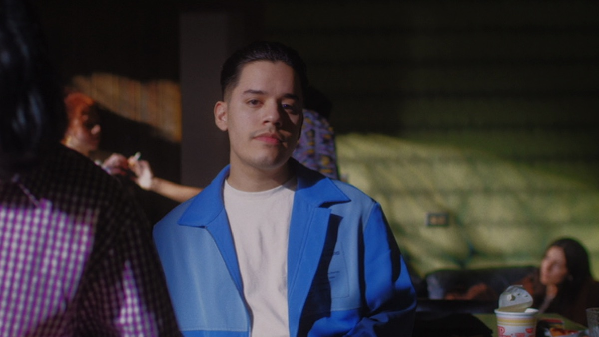

Rodrigo Torres de la Garza, conocido como Nsqk,
comenzó su carrera musical a la edad de trece años,
inspirado por la producción de artistas como Skrillex, Swedish House Mafia y Avicii.
Su nombre artístico proviene de un comentario en Instagram de un amigo, quien lo bromeó con el nombre "Nesquik".
Nsqk ha sido reconocido por su estilo único que combina pop, rap, R&B y EDM,
y ha sido parte de la escena musical mexicana desde su debut en 2020.
Su álbum "Roy" lanzado en 2022 ha llevado a Nsqk a presentarse en festivales de renombre en América Latina,
como Ceremonia en 2023 y Lollapalooza Chile en 2024. Además, ha colaborado con otros artistas,
como el puertorriqueño Álvaro Díaz, en la canción "Mami 100pre Sabe". Nsqk también ha lanzado su mixtape ATP,
que incluye interludios con el streamer y YouTuber mexicano El Mariana.
Estilo y Escenario: Combina géneros y atmósferas melancólicas con producción propia, mostrando energía y autenticidad en el escenario
Trayectoria: Debutó en 2020 con Botánica, consolidó su reconocimiento con Roy (2022) y destacó innovación en ATP (2024), participando en festivales como Ceremonia y Lollapalooza Chile.
Impacto: Su música refleja desamor, introspección y autenticidad, siendo una voz relevante en el pop alternativo y la música urbana latina.
| Fecha | Concierto/Evento | Ciudad/País |
|---|---|---|
| 1 nov 2025 |
Palacio de los Deportes |
Ciudad de México, México |
| 2 nov 2025 |
Palacio de los Deportes |
Ciudad de México, México |
| 22 nov 2025 |
Auditorio Telmex |
Zapopan, México |

